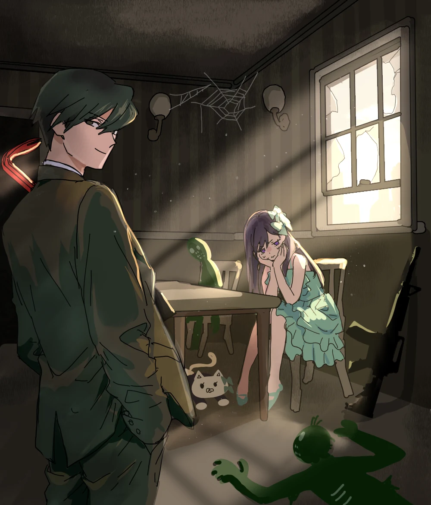

カクヨムで読むcompleted novel · 131 episodes
バールナース
新宿のノスタルジーな話やレトロゲー話、昔の二次創作文化の思い出など、自分が出来る話を全部詰め込んだ後に、AIにギュられていく人類の今後の展望について書いたら日本よりも英語圏で人気が出た謎作品です。完結済み。話に一区切りがつく２０話くらいまで読んで貰えるとめちゃめちゃ嬉しいです！ちなみに１３１話全部を読もうとすると７７万文字でこれは文庫本８冊分、土日に気合を入れて読む感じになります……。「面白すぎて土日が消えた！」とか「土日丸々好きな小説に没頭できたの久しぶりで楽しかった！！」って感想をXや旧なろうでいただいたので、相性が合えばめちゃめちゃ楽しい長編小説の読書体験になることをお約束いたしますが、合わなかったら土日がオシマイになっちゃうから早めに逃げてねッッ